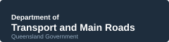
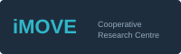

Let's build the smarter network together.
NiFTi is co-developed with its partners, not handed to them. If you operate, fund, or research transport networks, we would like to paint this with you.
Operate a network
Bring a real operational problem. We co-define the research scope and what success looks like jointly with you, build and test on a fit-for-purpose site or dataset, and move what works into live operations with a planned path for implementation from day one.
Fund or sponsor
Back a multi-agency program with a clear path from research to deployment and a talent pipeline that outlasts any single project. Your investment supports foundational capability, not just one-off outputs.
Research with us
Join as a PhD, MPhil, or industry-embedded researcher working on operational problems with real operational data. Industry-embedded fellows are co-supervised and spend time in both the lab and the control room.
Start a conversation
We would like to scope this together.

